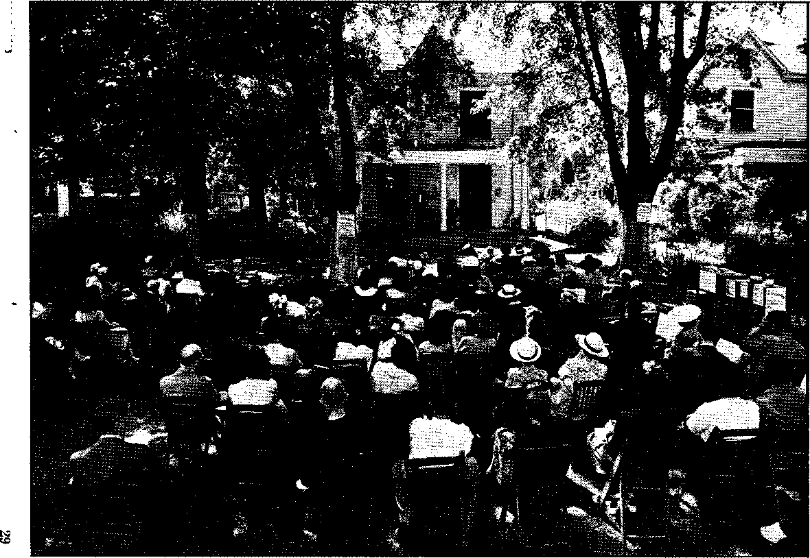

. Jehovah’s witnesses in Japan '
Japanese Kindness Hard to Understand
Devil, Not the Japanese, Wanted War 8
« Lize Meitner and Her New Job
Philip Wylie Gets It ‘Off His Chest* 14
“Thy Word Is Truth”
'The Righteous Flourish as the Palm Tree* 18
“Destroyed for Lack of Knowledge”
Mortality in Childbirth Reduced
A Series of Public Meetings (Picture).
“Russia and the Battle of Liberation”
Published every other Wednesday by
WATCHTOWER BIBLE AND TRACT SOCIETY, INC. 117 Adams St., Brooklyn 1, N. T., U, S. A.
. OFFICERS
President N. H. Knorr
Secretary W. E. Van Atnburgh
Editor Clayton J. Woodworth
Five Cents a Copy
|1 a year In the United States |1.25 to Canada and all other countries
NOTICE TO SUBSCRIBERS
Remittances: For your own safety, remit by postal note or by postal or express money order or by bank draft. When coin or currency Is lost In the ordinary malls, there Is no redress. Remittances from countries other than those named below may be made to the Brooklyn office, but only by International postal money order.
Receipt of a new or renewal subscription will be acknowledged only when requested. Notice of Expiration la sent with the journal one month before subscription expires. Please renew promptly to avoid loss of copies. Send change of address direct to us rather than to the post office. Your request should reach us at least three weeks before the date of issue with which It is to take effect. Send your old as well as the new address. Copies will not be forwarded by the post office to your new address unless extra postage is provided by you.
Published also In German, Greek, Portuguese, Spanish and Ukrainian.
OFFICES FOR OTHER COUNTRIES
Australia 7 Beresford Rd., Strathfield, N. S. W.
Canada 40 Irwin Ave., Toronto 5, Ontario
England 24 Craven Terrace, London, W. 2
India 167 Love Lane, Bombay 27
Newfoundland P. O. Box 521. St. John’s
New Zealand 177 Daniell St., Wellington, S. 1
Philippine Islands 121S-B Oroquieta St., Manila
South Africa 623 Boston House, Cape Town
Entered as second-class matter at Brooklyn, N. Y..
under the Act of March 3, 1870.
In Brief
Forfeiture of Citizenship •
♦ The earth is 'the Lord’s, all of it, according to the Scriptures, and all the human creatures that live upon it are merely tenants by His sufferance. But have you ever heard any politicians refer to the earth in that way? Certainly not. They have the earth marked off on maps, and with an air of finality say, “You mustn’t cross that line without telling where you were born, and why; whether you have curly hair or ingrowing toenails; whether your father was a man and your mother a woman; how much you are worth, and if there is anything off for cash,” with 27 more questions of like import. Most people go by the rules, because it makes too much trouble to just go across carelessly, without thinking of the future.
Up in the Puget Sound region Philip Stegerer enlisted in the Canadian army, swore allegiance to King George, and after four months was honorably discharged because of physical disabilities. Now he is a man without a country, without a job, and, as he said, without a dime. His only way of getting back into the United States was as an immigrant. He had lost his American citizenship.
Shortly after the closeof World War I, John McNeil, a Canadian war veteran, thought the United States would be a good place to live; so he moved in, with his wife and two little daughters. He got along all right until work got slack and he had to go on relief. Then came the dreaded investigation; his four lovely daughters, born in the United States, were put in Catholic institutions, and the father and mother and one little boy of 6 were shipped back to Canada. Of the two daughters, born in Canada, one, married and an expectant mother, was threatened with deportation and fainted; and the other made a break for liberty and at last accounts was still at large. What a world! -
CONSOLATION
I
“And in His name shall the nations hope.”—Matthew 12:21, A.5. V.
Volume, XXVII Brooklyn, N.Y., Wednesday, May 3, 1946 Number 69S
Japan as I Saw It
Firsthand account of an American soldier’s Impressions of Japan
MY ENTRY into Japan was a late oife. It was in the month of October when we landed in Yokohama harbor, and all of us were very much excited over this new experience. Each of us had been armed prior to our sailing, and this led us to speculate on existing conditions in this country. Many of us thought that our freedom would be restricted to a small area, that whenever we left the building in which we were to be housed we would go in pairs, and that under no conditions would we be allowed out at night. We had very little foundation for these thoughts and many of them resulted from rumors.
We docked in Japan on a cold, rainy day and were told that we would not get off the ship until that afternoon at 6 p.m. That night we were loaded on army trucks and taken to a building about a mile from the docks. It was pretty dark and none of us could see much. We got our first surprise when we saw GI’s walking around the streets alone and with no weapons at all, and the second surprise was when we saw a GI with a Japanese girl.
Upon arrival at the building that we were to call home we were greeted by other GI’s yelling out names of various cities and states in hopes that they might contact someone from their home town. We were as full of questions as they were, and in a little while we learned what the situation was. It was a pleasant surprise to hear that there were no restrictions and we could go and come as we pleased. All modes of transportation were free to the American troops and there was nothing to fear from the people.
The building in wThich we were billeted was a very modern brick structure and one of the highest in Yokohama, being eight stories in height. It was modern in design and equipment throughout, with the latest type of indirect lighting. The bottom floor and stairs were of tile; the other floors were made of wooden blocks. The washrooms were of clean tile, equipped with mirrors and American-style washbowls, and hot and cold water. There were also two elevators, one for freight and the other for passengers. We were very much surprised to find all these things after passing a couple of years in the jungles of Pacific islands.
In the morning we were able to get a good look over the city, being high up, and could see the extent of damage done. We were surprised to note how much of it had been cleaned up. The buildings were either standing intact or were pulled all the w7ay down—much different from the bombed-out areas of Manila, wThere the buildings had been gutted with fire, leaving only a shell. The architecture of the buildings around us was of the familiar Western type, and this made us wmnder, since wre had expected to see a good deal of the old Japanese architecture.
Going downstairs to get my breakfast I saw the pathetic sight of half-starved old people and babies waiting to get what leftovers they could out of the garbage cans. I felt sorry for them, for they had no idea what the war had been about and they were not the ones to blame for it. Most of them were dressed in old, dirty rags; some men had on either whole or part of some uniform.
The streetcars that went by our building -were similar to the ones in the States, -. except they were in pretty poor condi-ttion. They were filled to capacity. Very few autos, aside from army vehicles and busses, were to be seen. The few there were run by charcoal burner.
On the street the people were like ants going about their respective businesses. The women were dressed in their typical kimonos and wooden shoes; most of them carried something on their backs. Babies were strapped to their mothers’ backs, American Indian fashion, which I think accounts for the bowleggedness of the, people. Though the day was chilly, yet there were no hats or mittens for these youngsters; their bare legs were blue from the cold; these kids had to be taught to stand up to the hardships.
Yokohama lies between two hills, for the main part, but it extends back into these hills, which are almost s,olid rock. In these hills people still live in the airraid shelters. Many of the Japanese homes in Yokohama are no more than tin shacks through which the cold winter wind easily blows. But, though they are forced to live under these conditions, they keep their own surroundings pretty clean from filth, a trait altogether different from that found in Manila.
Tn the big cities of Yokohama and Tokyo there is very little Japanese architecture, and they look very much like any city in the United States. But in the smaller towns one sees the native designs. Japanese homes are very interesting, because they are so tiny and fragile. You must take your shoes off, everybody does, upon entering their houses, for on the floor are sections about four feet square woven out of bamboo. The doors are' made of either glass or paper sectioned.off in square designs of various sizes. In the summer these doors are slid back, making the house open. ■
They have very little furniture, decorations are at a minimum, and pictures are few. What furniture they have is very fragile and delicate and reminds one of a little girl’s dollhouse. The table stands about eighteen inches high and cushions are used to sit on. Tea is the national drink and is the first thing prepared, and is served before and during the meal. Their beds are of either mats or mattresses, and for sheets cotton is used by the majority; only the wealthy use silk opes. All the family sleep in the same room on the floor, one next to the other. They have no stoves, but use an urn of charcoal for cooking. In the wintertime it gets quite cold, yet the little children run through the unheated houses barefooted. The homes are, for the most part, clean and well cared for and are surrounded with flowers, bushes and trees.
The gardens of Japan are given the utmost care. People work them from morning till night, paying no attention to rain or hot sun. The soil is very rich and black. Nice fruit is-also grown in that country. The Japanese pear was an interesting thing to me, being of the same color as our United States variety, but round in shape and brittle, like an apple, instead of soft, yet tasting like a pear.
Their foods consist mainly of sweet potatoes and rice. The rice is prepared m so many different ways that I can see how they can get by with it day in and day out without tiring of it. I liked the way they cooked it very much. Fish is another of their main dishes and is eaten both cooked and raw. They like to get the calcium that it contains. The Japanese are great vegetarians, and instead of being light eaters, as I always thought they were, I have ^een them “out-eat” me many times when they had the available food. It is amusing to watch them manipulate a pair of chopsticks. They use them as a knife, fork and spoon, almost! I learned the principle but not the art.
During my stay there I had the opportunity to see one of their festivals. Being the only American present, I was given a chair at the best vantage point. It was quite a spectaele in celebration of the late emperor Miji’s birthday, First was the parade, which included all of their traditional devils, ghosts and spirits. Tojo’s recent attempt at suicide . was made a big joke. The Geisha Girl also got her bit of praise: being about fifteen feet high, she was carried by a dozen men. Following the parade came a marathon race with some fifty contestants. After a couple of laps around the field they took off cross-country and did not get back for forty minutes. In the meantime all sorts of tug-o’-war games were played, and the winners were presented with pencils; this seemed to them to be quite an honor. The traditional Japanese observance of politeness was one of the most outstanding things that caught my eye. The police of the city took part in the affairs as well as the big men of the town. I was asked out of politeness to also take part, but I declined the offer.
The Japanese are much the same as any other people except their customs and way of thinking are different. They are, on the average, very honest. Things that are lost are quickly returned, to the owners. These people are crazy for candy and will pay as high as a dollar for a candy bar, but in spite of that I saw one of them take off after a GI who had dropped a candy bar in order to return it, when he could just as easily have kept it himself.'They are not the money-crazy liars that many of the Filipinos were found to. be. Much fuss is made when a person enters the home of another, but the same person can get up and leave any time that he wants to and nothing is said about it, at times not even so much as a “good-bye”.
The bath system of the Japanese is another thing that is so different from our own that it interested me very much. Each section of a city has a central bathhouse; some are equipped with showers, others have tubs. Both men and women use the same facilities at the same.time, there being no regard for privacy shown, but nothing is thought'of it. The entrance to some of these buildings is open to the street with no door to block the view, with men and women going in and out. They seem to pay no attention, but take such things all for granted.
The Japanese start to read their books from the back instead of"the front. Their alphabet I also found very interesting; they go by the sounds. I thought the language to be very difficult to learn, but I found it is easy to pick up enough to make oneself understood; reading and writing it is the most difficult. Like us, they have many words spelled the same but with different meanings. The Japanese are much more educated than I had given them credit to be. The percentage of illiteracy is very small in the country as a whole. Though they may not be able to speak the English language many of them can, nevertheless, read a good deal of it and write it also. English was at one time a compulsory subject in the schools of Japan.
I went through a Japanese school and learned that their system is much the same as dur own. They start at the same time as American schools, and in the morning everything is Japanese and in the afternoon it is conducted in English. Before,1 the military system of the country had the kids in uniforms and told them even how they.'must wear their hair. In school, as at home, they take off their shoes and leave , them with their coats and hats. After classes they do their own janitor work' In the school.
C ■ ■ ■ s.
Women of Japan Made Slaves
The saddest women in all the world, to
my way of thinking, are in Japan. They are used for little more than slaves and have to haul around loads that would make a horse feel as though he were being mistreated. I have seen women carrying loads on their backs that were heavier than they were themselves. Most . men (there are exceptions) don't seem 1 to care whether women live or not. I once ‘saw a woman come aboard a train with a. load that would have staggered me. There were no vacant seats, and as she eyed about the car none moved to give her a resting place. I happened to get off the train at the same station that she did and I wondered if she would be able to get up the stairs. She tried, but could not, and finally went down on all fours in her effort to make it. No one would help her; so I took hold of her pack and lifted it up and got her to the top. You should have seen her. She couldn’t say “thank you” enough times. Later on it became a practice for the GI’s to assist Japanese women whenever they could. It is seldom that you see a man with a heavy load unless he is single. I learned to have a good deal of respect for the women of Japan, for they are very kind and hospitable and it is not uncommon for them to go to extremes to be of some help to a person.
I found that Jehovah’s witnesses in Japan were the best people I came across, and this was also the case while I was in Manila. They had all been imprisoned because of their affiliations with the Watchtower, whose publications were branded by the government as very dangerous to the people and the state. All of them that I met had served at least three years in prison. The Watchtower office in Tokyo is now the house of the chief of police, and another of their buildings is now used as a hospital. The representative of the Watchtower in Japan for many years, Mr. Akashi, served eight years in prison and was still a prisoner in the northern part of Honshu when I got there, but the edict • of MacArthur to release all political prisoners was his means of freedom. However, the time that he spent in prison so weakened and hurt him that he was unable to do any traveling. I did not gdt the opportunity to see him, but I met his son and other members of his family and in that way learned a lot about him and Jehovah’s witnesses in Japan. Mr. Akashi was a middle-aged man, wore glasses, had a good education, and spoke English very well. From his picture I saw - that he was a very healthy .and robust man before he was put in prison.
I learned that in 1938 the Jap government confiscated all of the literature and property of Jehovah’s witnesses and threw them all in jail. Most of them stayed there for three years. Mrs. Akashi died there in 1943, and so did another. The others were released and given civilian jobs and kept under such sharp surveillance that if three of them were caught in a group talking about the weather they were dragged into the police station and questioned. There were about a hundred of Jehovah’s witnesses prior to 1938, and forty of them were pioneers. They all served time in prison and none of them backed down on their stand. Though the number of witnesses; may seem small, yet it is considerable when it is realized that these people are heathen and puppets who aye not allowed to think for themselves.
To get to see Jehovah’s witnesses I had to travel into the rurals outside of Tokyo. The place was very difficult to reach on a rainy day, as I had to go through rich garden country that was laid out in rice paddies, and walking on the dikes it was plenty muddy and the wind really hit me. It was a two-mile hike through this country, and getting back in the dark was no fun. It was an inky blackness, and if it had not been for one of their children I would have gotten off into some of those gardens. I still think that the Japanese can see in the dark.
On one of those trips I met two other families of Jehovah’s witnesses. On another occasion I met a pioneer (fulltime Kingdom publisher) from Osaka, who was up there on. business with an engineer concern. He spoke pretty good English and we had a nice time together. They were all surprised and sorry to hear of Judge Rutherford’s death and were interested in Mr. Knorr (former and present presidents of the Watchtower Society). I gave them a couple of Consolations and they were glad to get them, since they are entirely without literature. They dug up some of the type they had buried and it was in pretty good shape; but it takes more than type to print.
Those experiences that I had with Jehovah’s witnesses in Japan I would not trade for anything. I did all that I could to help them, and they needed it, too.
I was told that in one B-29 raid 80 percent of Yokohama was destroyed; and from the looks of things the estimate was about right. There must have been thousands that died in the fires and explosions, and more will die from the direct and indirect results. Many will die of malnutrition and exposure too. God didn’t put man on the earth to live under such conditions, and rather than live in such poverty and want, a person would he much better off dead. It will take many years to rebuild Yokohama, and that is only one of the cities of Japan.
After all of the damage and loss of life, it was hard for me to understand how they could have treated the American soldier as they did. When approached by an American they did ail they could to make him understand. Many a ’ time I have been taken and shown when I did not understand their directions. Another thing I could not understand was why those people invited Americans into their homes to eat and drink and entertained them and sent them away with their arms full of pres-
MAY 8, 1M8
ents. After all, those people did not know that they were wrong as far as the war went. They were not responsible for it, and when it came they thought they were just as much in the right as the American, but, now that it is over with, there is no outward sign of enmity for the American on the part of the Japanese. It is true, a good deal of the kindness that they showed us was out of fear, but there was also a good deal of it that was not. I know that had things been the opposite, I would have acted differently from the way the Japanese did, I have been approached while oh the street and invited into their homes to eat and drink, knowing that the food I ate was hard for them to get, and they would have to go without to make up for what I had eaten. Upon leaving there was always some sort of gift as well as an invitation to return whenever possible. It w’as as though they had been our allies rather than our enemies.
I had the occasion to look up some Japanese people on business whom I had never seen before. I had only their names and addresses. When I got off the train in that particular town an elderly woman, noticing that I was a stranger, took it upon herself to help me to find the ones for whom I was looking. She could neither understand nor speak English but she saw to it that I contacted a person that did. The man to whom she took me went out of his way to take me to the address I sought, and when we arrived there we found that the people no longer lived there. He borrowed a bicycle from one of the kids near by and took me to the police station and spent the afternoon as my interpreter. When we got to the police station my guide fell all over the chief of police to be forgiven for his presence, and it was pretty comical to witness. A detective was sent to get in touch with the people I was seeking, and when they were located he guided me to them, and then waited to bring me back. I could not understand this type of hospitality. Even
7
in the United States it is seldom that a person who is a stranger to you will go out of, his-way to show you directions and then spend the afternoon trying to help. It is a strange people that live in those islands of Japan.
Most Americans hate the Japanese as 'they never hated anyone else and they ■tant to get even with them for the wrong they have done us. But after a few days in Japan it becomes apparent to any American that the Japanese people are not the murderers and haters that Americans have been led to believe from the propaganda. The ruthlessness of the Japanese soldier is typical of the militarists since the entrance of the Shoguns into'Japan years ago. The people themselves of Japan were mistreated the same way and were thankful their country has been helped to get back its freedom. The Japanese are much like a flock of sheep: where their leaders go they follow in blind faith. They did not know the reason for the w*ar other than that the emperor wanted it. They were not told the reasons for it, nor did they have the right to question the actions of the government. They were brought up to believe that they were to serve the emperor even if that meant war with Americans. The American army Intelligence Bulletins pointed out that many Japanese knew that they would lose the war when it first began, and wanted to see their leaders thrown out of the government.
I found the Japanese just like I imagine the average German, Russian, Italian, Frenchman, and every, other nationality of people on earth to be: not a nation of people wanting to fight all the time, but peace-loving and haters of war. for the misery that it brings. They want to live and let live, for the, most part. The average person all over the world wants this and is not to be held responsible for what their governments do. The government of a warring nation
8
has to whip its people into supporting a war, since most wars are a fight between the leaders of nations and not between the peoples. The peoples are only the tools used by the leaders.
Summing up the whole thing in my mixed-up head, I don’t think this war was of man’s doing, but was of the Devil himself. The Japanese army didn’t have the equipment to compete with the American army, nor did they have the fighting men, nor the resources. The Devil just worked on the minds of the few who were in control, giving them the idea that they were superior and better than others and could rule the world.
My stay in Japan was so short that I did not get the chance to really study these people as I would like to have. They are hard to understand and it takes more than a few months to get an idea what they are really like. Many of the things that I have said in here might be wrong and some of the things that I touched on very lightly should have been emphasized more, but everything that I have set forth is my honest opinion and is what I have seen and experienced myself. It is needless to say that I enjoyed my stay in Japan. Though they were the enemies of our country, it is my honest conviction that they did not know what it was all about, and the atrocities committed are not the fault of the Japanese people, but rather that of the military government that was in control.
Hot Propaganda
♦ In the New York Times on February 22 under the heading, “Power of the Press,” appeared the following in a letter from one of its subscribers:
In very cold weather ordinary bedclothes are not enough. By spreading newspapers between the blankets one can keep warm on the coldest nights.
It is nice to learn that somebody has finally found a practical use for the daily propaganda sheets.
consolation
The Atomic Age
“As time marches on, more and more honest persons are bound to perceive that the secret of life in happiness and peace Ues beyond the power of politicians, businessmen, and religious priests and clergymen, even with all their Atomic Age advantage.”—The, Watchtower, January 15, 1946.
ON August 5, 1945, an airplane flew over the Japanese city of Hiroshima, 343,000 population, and dropped a package, an atomic bomb. The results were fabulous. The city was 60-percent obliterated. Of its 6.9 square miles only 2.6 square miles remained. Glass was broken up to twelve miles from the explosion, roofs were torn off up to five miles, a forest fire was started at four miles, and within a radius of two miles everything was blasted. In a building a mile from where the bomb fell, plush chairs burned behind a window which, so it happened, remained unbroken. The official figures compiled by the United States army state that the result of the bomb in Hiroshima was 70,000 to 120,000 dead or missing men, women and children, with 75,000 to 200,000 injured.
Five days later another atomic bomb was dropped on the Japanese city of Nagasaki, 253,000 population, occupying twelve square miles. The effect of this was much the same as the other. About four square miles of ,the city was destroyed. The official figures compiled by the army are that here there were 40,000 to 45,000 dead or missing and 40,000 injured. In the two cities, some 290,000 were made homeless. ■
At Hiroshima (and probably also at Nagasaki) virtually all persons within about one mile of the bomb who were not killed by mechanical causes were burned fatally or seriously. At the instant of explosion there is emitted a huge quantity of radiation. These radium-like waves killed inhabitants of both Hiroshima and Nagasaki who were directly under the bomb, affecting the bloodforming tissues and causing the blood to seep out through apparently undamaged skin and to drain into internal cavities.
It seems that the physicists discovered uranium in the early thirties, but they had been making relatively little progress until the German Jewish woman mathematician, Lize Meitner, made calculations to prove that for years the scientists, without knowing it, had been splitting the uranium into two equal parts. It turned out that she was right. It also turned out that when one pound of TNT explodes it releases five electron volts of energy, but that when a single uranium atom is exploded it releases two hundred million electron volts of energy.
Forgetting that the pope has unhesitatingly blessed cruisers, the London Catholic Herald four days after Hiroshima was bombed said:
The Holy Father has persistently maintained a Christian distinction between legitimate and illegitimate weapons of war.
What this expression really means is that it is perfectly all right, in the pope’s eyes, to blow the entrails of a fellow man all over the landscape, provided it is done with a sixteen-inch gun, from a battleship, but to do it with an atomic bomb from the skies just doesn’t, make sense. Warming up, the Herald, probably thinking about the pope’s fellow ‘king of heaven’, Hirohito, went on to say: ' ' ■ ■ .
The use of such a bfimb is utterly indefensible.
That went very well, as a tryout for British readers, but in the United States it would never do at all. So Lize has been added to the faculty of the Catholic University of America, in Washington, and what the Boman Catholic Hierarchy doesn’t soon know about how to make atomic bombs nobody will know. One .can almost hear the Hierarchy talking V* itself and saying: ‘This is the coming filing. We cannot live in the past. Battleships were very nice in their day, but they are on the way out. At first we didn’t like this idea of a cheap little airplane dropping a small package on a city and blowing it off the map, but now let’s hire that Jewish woman, no matter how much it costs, and maybe we can get a big enough start to blow all our enemies to smithereens before they know what it is all about/
The. atomic bombs in the United States were made in a plant in Tennessee which covers 59,000 acres, or more than 92 square miles. Within this reservation the government built a city to accommodate 78,000 workers and their families. At another plant, built for' the same purpose in the state of Washington, the area covered was 430,000 acres, or over 670 square miles; the government-owned town here had quarters for 17,000 workers and their families. The testing ground was in New Mexico. All together, there were 125,000 employed at the peak of the atomic bomb project. Among these were thousands of leading scientists and engineers, including the leading atomic scientists of all Allied nations.
When the initial bomb was dropped at the proving grounds in New Mexico it was made to explode at 100 feet above the earth, and pushed the solid ground straight down for a distance of 300 feet across, turning it into an unbroken expanse of jade*and-turquoise-eolored glass, as a result of the intense heat and pressure. This pressure was estimated to have been millions of times greater than that of the atmosphere, which is 14j pounds per square inch at sea level. Within a ring a mile in diameter all small life died. A bat, miles away, and apparently unharmed, was so shocked that it made no attempt to escape from man. Hight weeks after the test the soil was still so radio-active that the investigators wore canvas footbags over their shoes, so that no radio-active soil would cling to them. The test bomb was exploded in a desert part of New Mexico at 5: 30 a.m., July 15, 1945.
To the scientists themselves it seems ludicrous that either the politicians or the Big Business crowd should think that the manufacture of atomic energy could remain a secret; yet a dozen bills have been introduced at Washington proposing the maintenance of secrecy, the control of research in atomic energy for any purpose whatever, censorship on the publication of new information about atomic energy, making it a crime to engage in nuclear research without official permission, and in one instance one politician proposed the death penalty for indulging in nuclear research or publishing new discoveries on the subject without permission.
Dr. Ernest Orlando Lawrence, University of California scientist, is very certain that atomic energy can be used to drive locomotives and ocean liners, and that it could even now be used to heat vast quantities of water and pipe it all over a city. He thinks also that the running of cars and planes on batteries charged by atomic energy is not at all far-fetched. That batteries might have to be used as intermediaries seems not to have occurred to an editorial, writer in the Bulletin of the American Association for the. Advancement of Science who made the disquieting observation, “No one would want an automobile that from a standing start would go a mile in the first two seconds.”
The London Sunday Express of November 18, 1945, contains an interview
with a 71-year-old inventor named J. Wilson which seems to show that the problem of the atomic propulsion of vehicles of aYy kind has been solved. Mr. Wilson says that his device is so simple that it can be manufactured for $10; that he fills a metal flask with liquid air, and keeps that under the dashboard of his car; that under the hood of the car he has a cylinder within which are suspended a fragment of uranium and four secret chemical elements; that when the liquid air is introduced into the cylinder it releases atomic energy which produces oxygen and hydrogen; that bypassing the carburetor, these two gases are fed directly into the cylinders, where combustion takes place in the ordinary way. Mr. Wilson went on to say that by his method it costs only a dollar a week to drive a ear; that he is in touch with the British government; that he can propel any type of machinery, including railroad engines, ships and planes; that for many years he has been experimenting with and acquiring stocks of uranium and conducting experiments in Great Britain, Belgium, and Germany. If his statements are correct, he is in possession of secrets for which others would be willing to give him billions of dollars, without any hesitation at all.
Dr. Reuben Gustavson, vice-president and dean of the faculties of the University of Chicago, is one of those who has expressed himself as quite convinced that there is a possibility of driving vessels and trains with atomic power, and that smokeless cities may become a reality, as a result of the atomic researches under -way.
The scientists are all agreed that by the use of atomic power dams could be built and canals could be dug in a fraction of the time hitherto necessary. In their enthusiasm some have even proposed demolishing the icecaps at the poles, but others have decried this. They have pointed out that the sudden and complete melting of the icecap now resting upon Greenland alone would completely submerge New York city and other towns along the Atlantic seaboard, and if all the icecaps in the world were to be suddenly disposed of the waters of all the oceans would be raised from 100 to 160 feet. So, better let the icecaps stay.
Watson Davis, director of Science Service, explains that peacetime utilization of atomic energy is practical, for the reason that the nuclear reactions producing energy can be produced at a slow, nonexplosive rate. He mentions that one of the principal difficulties in the way is that the nuclear reaction gives off large quantities of powerful radiation that are extremely poisonous or damaging to human life. It is for that reason that uranium power plants, as was the case with the government’s $2,000,000,000 plants in Tennessee and Washington, need to be surrounded by great masses of concrete and metal to confine these radiations. He mentions that the power-production entails the production of all the material that can be used in the making of atomic bombs, and thus every peaceful atomic power plant is an atomic bomb factory. Mr. Davis adjudges that the discovery of how to make atomic bombs will eventuate in about five thousand new and improved products and procedures, and that the improvements in pumps alone will in twenty years repay the cost of the plants in Tennessee and Washington. All this in the World Almanac for 1946. '
Mr. Davis also points out what is universally admitted: that, due to its destructiveness and small size, the atomic bomb carried to its destination by jet or rocket planes is a weapon of attack for which no adequate countermeasure is apparent. He agrees that by the means stated the bulk of the population, industry and military strength of any nation could be wiped out within a few weeks, without the possibility of retaliation or defense. And he also mentions, as do other writers, that the principles of the bomhs are known in other countries, and that the bombs themselves could be duplicated there within a very few years.
\ All the statesmen of the world are 4 desperately worried about the atomic bomb; and that includes all the American statesmen. One of these, Representative Arends, of Illinois, and a member of the military committee of the House, made this statement:
I am advised on the most competent authority that our scientists and technicians have now [two months after Hiroshima] created atomic bombs of such prodigious and multiplied destructive power that the explosion which killed 150,000 humans and obliterated the city of Hiroshima was only a small firecracker by comparison.
Americans must now understand that the whole conception of military attack and defense has been completely changed. There are no more soldiers and civilians. In the next war the contest will be between populations.
Mr. Arends thinks that the only present answer to the threat of the atomic bomb lies in the decentralization of cities and production facilities, and the provision of underground shelter for-both populations and industries. Though it would be no fulfillment, it reminds of Revelation 6:15: “Kings of the earth, the nobles, the officers, the rich, the strong-—everybody, slave and free—hid themselves in the caves and among, the rocks of the mountains.”—Goodspeed.
The newspapermen are as much worried as the statesmen. The editor of the Altoona Tribune said, in part : :
Think what would have happened-had the Germans won in their frantic race to discover the long-sought secret of atomic power! ... How can man from henceforth go his old way, seeking strife,, courting misunderstanding, pridefully thrusting aside others so that he and his nation can be first, can be richest, most powerful J . , One atomic bomb is said to be equal.fto 20,000 tons of TNT. . . . The perfection of the radio-controlled aerial bomb or torpedo would- make conflict among men tantamount to sel.f-destruction. Man cannot survive any greater horrors than these he is contriving for himself.
I
All Things Are Now Ready
The English physicist Professor M. L. Oliphant delivered Iwo notable addresses in Birmingham. At the first one, October 18, 1945, he stated that the atomic bombs used against Japan, equivalent to thousands of tons'of TNT, were already out of date; that even then bombs equivalent to 2,000,000 tons of TNT could be produced; that he thought it would be but a short time until a single bomb could be produced that would be equivalent to 2,000,000,000 tons of TNT, and the poi-soned-gas products that would be exhaled therefrom could render 2,000 square miles uninhabitable. (This is more than the combined areas of New York, Chicago, Philadelphia, Detroit, Los Angeles, Cleveland, Baltimore, St. Louis, Boston, Pittsburgh, Washington, San Francisco, Milwaukee and Buffalo.)
In his second Birmingham address, delivered November 3, 1945, Professor Oliphant said that the value of the secret held by the Allies was about six months’ effort on the part of any industrial country, and that within about a quarter of an hour of war’s being declared all the cities of Britain or other country engaged in war would be laid in ruins; also that the bombs would be delivered perhaps not by aircraft but by rocket.
Devere Allen, editor of the Worldover Press, explains that it would take but a very small bomb to finish off New York and Brooklyn, The bomb would be just dropped in the ocean off Manhattan and six feet of water would sweep across the highest point of the island, cutting off power and drowning everybody in the subways. :
The Swedish physicist, Professor Manne Siegbahn, laughed at the idea of the manufacture of atomic bombs being a secret. He said that “Ml ffie leading specialists of nuclear physics know ail there is to know about the bomb” aijd that he himself coidd make one in a few months if he had the necessary equipment.
In an address at Newcastle Sir Stafford Cripps, member of the British cabinet, and president of the Board of Trade, said:
I do not believe that the people of the world have yet realized what the atomic bomb means for the future history of the world. It is idle to imagine that it can be preserved as a secret, or that its manufacture will be too difficult or costly. ... A very small object, carried by aircraft or rocket many hundreds or thousands of miles, can now destroy a city and its inhabitants: a few of them ean destroy a country in a moment. This completely new factor in our lives must make us think out again our whole approach to the future of the world. This is an absolute first and overriding priority for every people in the world, great powers and small. We have reached the stage where two countries can be sure of mutual destruction. "The atomic .< bomb is at the same time the most disastrous and destructive discovery ever made by mankind. ... It is the ultimate proof of the absolute need for that way of international life and of individual life which Christ preached to the world 2,000 years ago.
Howard W. Blakeslee, Associated Press science editor, said:
It is easy to see how atomic power could be used to destroy most of mankind.
Said Waldemar Kaempffert, science editor of the New York Times, in his summary of scientific news for the year 1945:
The outstanding event not only of the year but in the whole history of science and technology was the splitting of the uranium atom, with consequences in Japan which have appalled physicists, statesmen and the common . people. Indeed, so appalled were the physicists that they banded themselves into a federation which has been prodding Congressional committees into a realization of what it means to release energy from the atom for good and evil. For the first time science has been shocked into an awareness of the social consequences of its discoveries. It is now either co-operation or vaporization, the millennium or destruction, or, as Louis Adamic [statesman and publicist for Yugoslavia] puts it, ‘‘one world or no world.” .,
Richard Law, former minister of state, in an address in London, said that the real danger is not that the world will suddenly blow up and dissolve in smoke, but that the next war, if any, will be waged with extreme efficiency, and at the end of it there would be nobody at all left on one side, and only the chief of staff, the war cabinet and a few thousand people on the other side. He also said that the scientists having evolved this horrible weapon were now showing every sign of climbing out from underneath it very noisily “and leaving it on the laps of politicians and people who have to live in the world of men and make the best job of it they can”.
It is the expressed view of Professor Harold J. Laski, chairman of the British Labor party, that every implication of the atomic bomb means planned internationalism. His statements, made at a dinner in the Astor ballroom, closing a three-day atom-bomb forum, show a strong leaning toward Sovietization. He said, December 3, 1945:
It is an international discovery. The planning of its application has been international. The organization of its future use must be international also. There is no nation-state fit to be trusted with the development of atomic energy. It is clear to any honest observer that a society dominated by business men could not be trusted to create the mental climate in which the development of atomic energy would be confined within the framework of peace. They would not give the eom-mon people the education because they fear its outcome. It is the business man who has split our society in two, the political society and the economic society. They have made the policemen the sanction of the first and the threat of starvation the sanction of the second.
There is only one country in the world । today where this dichotomy [division by 1 pairs] has been transcended. There is only one country, also, where science and technology can be developed without sacrificing the education of man and fearing the breakdown of social well-being or community consciousness. It is significant that only in the new world of Russia has the business man ceased to count. It is also significant that one of the major preoccupations of the great vested interests is how to keep the ‘secret’—which is no secret—from the knowledge of Russia. [This statement is the more remarkable because Professor Laski was formerly a lecturer at Yale and Harvard universities, Big Business strongholds.]
Another world-famous teacher, Albert Einstein, voiced the general thought of hopelessness in the present outlook when he said:
The great powers, united in fighting, are now divided over the peace settlements; the world was promised freedom from fear, but in fact fear has increased tremendously since the war ended.
The best take-off we have seen regarding Uncle Sam’s new code of morals, illustrated at Hiroshima and Nagasaki, is by the columnist Philip Wylie. Under the engaging title “Off My Chest” he had this analysis of the situation, published in The Gazette and Daily, York, Pa., January 12,1946. Doesn’t it seem to suggest that the world needs a new engineer? Well, cheer up; the new engineer has been appointed, but he is on a brands new engine, on another train, on another track, and with another load of passengers, instead of the maniacs aboard Lucifer’s Special. Wylie says:
We are on board a wild train. The brakes are broken. Ahead, are miles of downgrade, curves and cliffs. We are picking up speed. The train is called the United States of ''America. We have had runaway disasters on this same grade before: World Wars I and II. A lot of people were killed in those wrecks. This time the train also carries dynamite— tons in every car. If we have another wreck, there won’t be even a whole corpse left.
What’s happening on that train? Well— the engineer is worried, perhaps not badly and perhaps without enough understanding of the situation, but he keeps twiddling things, hoping they’ll slow the ears. The firemen hqave on coal, blow the whistle for the devil of it, and shy anthracite at everything they pass—farmer’s bull, rabbit or a switchman.
The windows of the mail ear are so dirty that the civil servants cannot see out. They don’t know anything’s wrong.
In the baggage ears, some of the men are working. One or two, however, are looting the most promising packages. Next comes a dusty car crowded with laborers. They have not noticed the abnormal gain in speed. They never will notice, until it’s too late. Because they’re holding a meeting—a noisy meeting —at which they have agreed to send a delegate up to the club car where the bosses are riding, to demand a one-third pay raise. They threaten to wreck the insides of the train— or at least the club ear—if the raise isn’t granted.
Then come the coaches. Kids are tearing . up and down the aisles among orange peels and candy wrappers. Adults are reading pulp magazines and comic strips and listening to a soap opera on somebody’s portable radio. A very intelligent-looking man has just hurried through the coaches announcing that there’s something the matter with the brakes. Mostly, human din drowned him out. The few people who did hear told each other that he was a crazy professor and pointed out that broken brakes are problems for the train crew and responsibilities of the railroad managfjnent.
This same gent has spread the news. The men in the club car were in conference. They scowled annoyedly. One or two decided to get drunk, on the chance that there was something in it. The others went back into session—planning to lock up the laborers’ coach and starve them out of the wage demand. They keep thinking of slogans like, “'Threat to Private Enterprise!” Every time they think of one they design an advertising campaign for it.
In the Pullmans, people who heard decided to be calm, whatever happened. Some college presidents, sipping highballs in a compartment, began arguing about how to teach better railroad operation to future generations. In a drawing room, a half dozen clergymen discuss technological progress, which they regard as a sin. One dining ear waiter has put on his cleanest jacket, walked to the train’s rear platform, and is looking up silently at the blue sky.
The train is now hitting ninety. It is barely possible that if every single person on board went to work as best he could and at the risk of his life, the train could be brought to a stop. If they broke the windows and hung out, holding each other’s legs so they could jam golf clubs between the wheels and the brakeshoes—if they made ropes of Pullman sheets and the safety cord and threw out the furnishings to act as drags—if the ministers set unanimous examples of grim self-sacrifice— if the college presidents went up to aid the engineer—if the firemen banked the fires and leaned overboard to burn ‘ off their shovels on rail and whizzing wheel—if the radiolisteners would try to signal ahead for a sanding of the track—if the clerks stood on the cowcatcher and dumped out the letters to increase traction—they just might stop.
The scientist hurries through with his warning again. And more people note it. These now meet on a platform between cars. One wants to throw the dynamite overboard. The others point out that it will land on track below, where they’ll hit it for certain; they’ve reached the cliffs, on the runaway train. They finally agree to pass a law against carrying dynamite on trains. Then wrecks (or wars, as fools like me call them) at least won’t kill anybody.
What I mean is, how do we Americans, who use atomic bombs, have the maniacal may e, iMe
gall to propose they be “outlawed” ? Do We imagine we can make that hypocrisy stick? Don’t we realize that man must change, nations, the world—if we are to save the hides of most of the people, in all likelihood, who are alive this very day? Evidently not. Evidently, guys like me on the train can merely keep “Notes on the Last Few Minutes”, in the preposterous hope that somebody, ten thousand years from now, will dig them out of a mess of molars and femurs—to learn nothing . useful, perhaps: just that back around anno two thousand, some men could write. Write —and even read, when the letters were big , enough and printed on walls, in fire.
Rich Men’s Rust
♦ The Treasury Department publishes an annual report listing those who dwell in the stratosphere when it comes to annual incomes. During 1943 twenty of those who received salaries from corporations had incomes totaling up to the staggering figure of $7,471,850,000. One man alone, Louis B. Mayer, the movie magnate of Hollywood, received from Loew’s Ine. $908,070 for “personal services" rendered to the company.
Only in a world of selfishness and greed is it possible for a few men, who neither labor nor toil, to own and control practically all the wealth of the earth. But it shall not always be this way. James, the apostle, so declared in no uncertain terms: “Go to now’, ye rich men, weep and howl for your miseries that shall come upon you. Your riches are corrupted, and your garments are moth-eaten. Your gold and silver is cankered; and-the rust of them shall be a witness against you, and shall eat your flesh as it were fire. Ye have heaped treasure together for the last days. Behold, the hire of the labourers wTho have reaped down your fields, which is of you kept back by fraud, crieth: and the cries of them which have reaped are entered into the ears of the Lord of sabaoth.” (James 5:1-4) So, beware! O ye rich men, of the fust which shall eat your flesh.
Need for a High Priest
SENTENCES to death are common in human experience. Man’s first sentence to death was that of Adam, and was because of his sin in the garden of Eden. Sin is the transgression qf God’s law. (1 John 3:4) Simple justice re--quired the entering of the judgment of death against the willful sinner Adam, and the execution of it. That judgment , was entered by Jehovah God in heaven itself. In due time the giving up of the life of the perfect man Jesus corresponded exactly with the value of the perfect human life which Adam had forfeited for all his offspring by reason of his sin and God’s penalty for sin. But the death of the perfect man Jesus could in itself not work good to the undone offspring of Adam unless the value of it were presented before divine justice as an offering for sin and as a ransom for humankind.
God could not appoint someone els'e to present the value of Jesus’ perfect human life in heaven as a sin-offering, because God had appointed Christ Jesus to be His High Priest, and the High Priest must enter into God’s presence with the sin-offering. Jesus as a man could not do that. His human life was laid down on earth. The value of it must be .presented by granting the High Priest access to heaven. It pleased God to give to His tried and faithful Son the honor of thus presenting the value of the perfect human life as a sin-offering. Carrying ' ■ out His purpose, God raised up Jesus out of death to the “divine nature”, and the divine Jesus now had access to the courts of heaven. When Jesus ascended into heaven He appeared in God’s presence and presented the value of His human life as a sin-offering. It was received in behalf of humankind, but the first benefits from its application began coming to those who became members of the church, which is the “body of Christ”, the later benefits coming to all other believers of humankind who will gain eternal life on earth.
The sin-offering by Jehovah’s High Priest had been foreshadowed by the ceremonies which God caused the Jews to perform annually in connection with -their Atonement Day as required by the Mosaic Law. The animals were slain in the court of the sacred tabernacle, and their blood was taken by the high priest into the Most Holy of the tabernacle and sprinkled before God’s mercy seat. The tabernacle court pictured this earth, where the sacrifice of Jesus was made. The Most Holy pictured heaven itself, where the value of His perfect human life was presented as a sin-offering. Concerning this it is written, at Hebrews 9:22-26: “And almost all things are by the law purged with blood; and without shedding of blood is no remission. It was therefore necessary that the patterns of things in the heavens should be purified with these [animal sacrifices]; but the heavenly things themselves with better sacrifices than these. For Christ is not entered into the holy places made with hands, which are the figures of the true; but into heaven itself, now to appear in the presence of God for us : nor yet that he should offer himself often, as the high priest entere.th into the holy place every year with blood of others [animals]; for then must [Jesus] often have suffered since the foundation of the world: but now once in the end of the world hath he appeared to put away sin by the sacrifice of himself.” So God has provided for us the needed High Priest.
God had foretold by the prophet Isaiah what should be done as to the sacrifice of His beloved Son. Isaiah 53:10-12 reads: “Yet it pleased the Lord [Jehovah] to bruise him; he hath put him to grief: when thou shait make his soul an offering for sin . . . He shall see of the travail of his soul, and shall he satisfied : . . . for he shall bear their iniquities. . . . because he hath poured out his soul unto death: . . . and he bare the sin of many.” Just as God had foretold, Jesus died for man’s sins and was raised out of death for the Justification of huinan-kind.—1 Corinthians 15:21; Romans 4:25.
Note the above quotation: “Without shedding of blood is no remission for forgiveness!.” (Hebrews 9:22) The, shedding of the blood of a perfect human creature was the only possible way whereby God could be just and the jus-tifier of mankind. The life is in the blood, as stated at Leviticus 17:11,14. The judgment sentence of God required the lifeblood of Adam because of sin. As a redemption for Adam’s offspring, who were not sentenced but who came under condemnation because of sinful birth, divine justice accepts the lifeblood of the perfect jnan Jesus, to the end that in due time the value of that sacrifice may , be made available for the benefit of all believing men. During this so-called - “Christian era”, during which time God ' is selecting the members of the “body of Christ*’ or church, the value of Jesus’ - perfect life poured out on earth is applied in heaven as a purchase price for the benefit of those who become consecrated to God as underpriests of Jehovah’s great High Priest. Later, at the " completion of th$ membership of the “body of Christ”, the merits of Jesus’ perfect human sacrifice will be made available and applicable as a purchase price for the benefit of all believers among men. As a proof of that fact and showing that the blood of Jesus is a price of great value paid that believers might live, it is written to those now members of Christ’s body: “Ye are , bought with a price.” (1 Corinthians 6:20; 7:23) What is that price? The apostle Peter answers: “Ye know that
MAY 8, 1946 <
ye were not redeemed with corruptible things, as silver and gold, from your vain conversation received by tradition from your fathers ; but with the precious blood of Christ, as of a lamb without blemish and without spot.”—1 Peter 1:18,19. ;
To be brought into harmony with God man must know something of God’s pro- ’ vision. He must repent of his wrongful course. He must believe that the blood of Jesus was shed as a purchase price for sinners, and then God’s mercy must be extended to him because of his faith. The basis of restoring humankind to relationship with God as His children is the lifeblood of the .perfect man Jesus Christ. Hence the due time ha^come for men to be brought to a knowledge of this truth and thereby have an opportunity to become sons of God.
The enemy, Satan the Devil, by means of religion has misrepresented Jehovah God by claiming that He is so cruel that He must have the blood of someone and that llis wrath is appeased by the blood of Jesus; and therefore, only when thus appeased, is the angered God willing to forgive the sinner. That is entirely untrue. God is just, and hence the execution of his law in harmony with plain justice cannot be ignored. Instead of a vengeful lust for blood, it was the love of God that provided a way for the requirements of His own justice to be completely met; and this was done by the willing obedience of Jesus His beloved Son even unto death. The pouring out of His lifeblood in behalf of sinful humankind forms the basis for bringing Adam’s offspring into ■ harmony with God. Now, because of exercising repentance and then faith in God and in the shed blood of Christ Jesus, the obedient . believer who dedicates himself to "God receives justification from sin and con-denination. God is therefore both just and the justifier of them that believe .and whom He makes Llis spiritual sons and . heirs.—Romans 3 : 26. ;
17 A
‘The Righteous Flourish as the Palm Tree’
WALKING along a quiet drive to a farmhouse one day, I. noticed that * it was flanked on each side by tall palm trees, heavy with their burden of dates. On the right, a wonderful field of alfalfa 1 looked very much like a flowering mead* ow. On the left, the irrigation waters roared along in a big ditch, bringing life and gladness to the plants in the fields beyond. On the other side of the palms lay a carpet of green grass, graced with a flower here and a shrub there, and in the background the unpretentious home of an old couple.
It was .a lazy, hot morning. The old cow that browsed at the side of the road looked up inquiringly, switched her tail, and then went on grazing. A sleepy wolfhound gdt to his feet, launched his mjghty body across the bridge, and came up to sniff me suspiciously, then escorted me to the very door. {^Satisfied I was not an enemy, when his mistress greeted me with a'welcome, he lay down again.
All this beautiful setting inspired me to. say, ' The Lord teaches us many things, au^ if we search for wisdom, the greatest gift, He surprises us with the wonderful trtith about things.” Just then I looked up at two tall palms in her yard and continued, “For instance, ‘The righteous flourish as tht^palm tree.’ Why do the righteous flourish as the palm tree?” I did not answer njy own query.
When I got back to the car I was startled into repeating, “Why is the , righteous like the palm tree?” It would have been a startling thing, I told myself, if the lady had asked me that question; for I knew little about it except that it produces dates.
The fact that I was ignorant on this subject almost consumed me. On my return home I immediately looked up everything in my Bible and other helps. This only whetted my appetite for more,
and I finally ended up in the Maricopa county library, and the State Agricultural Department. And so I am sure I . have the answer. Shall I tell you? According to Richards’ encyclopedia, there % are 1,500 kinds of palms; but I will name ..frat nine of the most important. They are the coconut, African oil palm, date, sago, barnauba, betel, sugar palm, Palmyra, and piassava. These provide all the necessities of life: food, clothing and shelter. Many palms bush out on top like a feather duster, with one long , straight trunk, but other varieties run along the ground bushlike. These' have long, rope-like stems that are very strongs ,
Many palms yield valuable oils. Whole countries have been made rich by the sale of these oils: copra, babassu, co-lume, urucuri. While these are used by savage tribes, they are also useful in every kind of industry, from watches to railway trains, for lubrication. They also go to the malting of artificial butter, candles, soaps, and perfumes. The steel manufacturers smear certain products with it, to protect them. Also, it is used to grease railroad axles. No other fat has ever been found to take the place of the oil Used for this purpose and stand the strain^ in' that particular spot. .
Wine is made- from palm sap; sago, from the pith of sago palm and other 'varieties; rattan, from the thin flexible stems of various species of calamus; vegetable ■ ivory, from the nuts of the tagua or ivory palm. Buttons -are made of this ivory, and many other small items. Many palm fibers are used in making brushes, hats, baskets^ and rope. Wicker furniture and also cereals are made from some varieties. '
The date palm, of over 400 different uses, is the most valuable of all palms, and is the palm of the Bible. Everyone should know about this palm, in some countries so valuable that its owner is taxed. Only the female tree bears fruit; it cannot be pollenized without the male tree. Some growers plant only female trees and buy pollen, which is sold in little cloth bags and carried to every female flower. Of course, this means that some only go in for this business also. The pollen of the date tree is so strong that it lasts a long time, and thus a regular business can be carried on by the sale of it. Over eighty-five million trees have to be treated this way every year.
In North America the date palm is valued for but one thing, the rich tempting fruit that contains more easily digested sugar than any other fruit known. It-has long, feathery leaves; its crown rises at the end of a. short frunk. The lowest leaflets are spiny; hence pollinating and picking the dates are difficult jobs. The tree grows and thrives best in temperatures from 110° to J.200 F. The palms must be ■well, watered until the fruits begin to ripeft^but the fruits are sweeter when the palm.lacks moisture; and the best fruit is produced when the tree is in its old age,*the tree sometimes grows to a height of eighty feet, but most commonly forty to fifty. It begins to bear fruit at from six to eight years. Smiths Bible Dictionary says of it:
Its 'trunk is straight, tall and unbroken, terminating in a crown of emerald-green plumes, like a diadem of gigantic ostrich feathers. These leaves are frequently twenty feet in length, droop slightly at the ends, and ■ whisper musically in the breeze. The palm is ^ia truth a beautiful and most useful tree.
Its fruit is the daily food of millions; its sap furnishes an agreeable wine; the fibers of the ; base of its leaves are woven into ropes and' rigging; its tall stem supplies a valuable timber; its leaves are manufactured into brushes, mats, bags, couches and baskets. This one tree supplies almost all the wants of the Arab.
I conclude with a quotation from the Bible:
The righteous shall flourish tike the tree; he shall grow like a cedar in Lebanon. Those that be planted in the house of the Lokd shall flourish in the courts of our God. They shall still bring forth fruit in old age; they shall be fat and flourishing; to shew that the Lokd is upright: he is my rock, and there is no unrighteousness in him. *
— Contributed from Arizona.
The Heavens Show God’s Glory
. *
THE physical universe, of which heav-enand earth are flirt a part, is immense and beyond imagination; it is the object of this article to draw the reader’s attention/thereto, in the consideration of the works of God. Looking into the skies on' a dark but-starry night one observes a great number of heavenly bodies, some appearing greater or lesser, but actually may not be so because nearer stars may appear larger than more distant stars of greater magnitude. Some heavenly bodies are designated planets; others, suns, moons, stars individual, in pairs, in galaxies, in nebulae. There are also comets, meteors, and even star dust. Considering the relative size, nature, and number of thffte bodies may help us by comparison to an appreciation of the immensity # jjhe universe, the ‘heavens’.
Our sun of great size, whose temperature at photosphere level is estimated at 6,000 degrees Centigrade, its central temperature as found by scientists to be 21,000,000. degrees, and the mean temperature of the whole mass, some 12,-000,000 degrees. In size the sun is 1,300,-000 times as great in volume as the earth, and has a diameter of 865,000 miles, and a density rather greater thah that of water.
While our sun is great, yet it is of interest to compare it with that red star, in the constellation Scorpion, called Antares, which is the largest star known, being some eleven hundred million times as large as our sun, its diameter four hundred million miles, which is more than four times the distance of the earth from the sun.
The farthest distance in the universe recently measured by man is five hundred million light-years, which, expressed 'in land miles, is three thousand million million million miles (3,000,000,000,000,000,000,000 miles), That distance, of course, is not the farthest distance in the universe, which, shall we say, is immeasurable. The light from Antares took thirty-four thousand-years to reach us.
Heavenly bodies move with such precision that by comparison our best chronometers are but clumsy timepieces. Such is the accuracy of the movement of heavenly bodies that astronomers observing the velocity and path of a comet do calculate when, after passing out of sight of our earth, it will pay us on its orbit a return visit, say in some 200 or 300 years’ time; these astronomers may not see this comet again, their life span is insufficient, but fellow astronomers many^ years afterward do observe the comet' returning on schedule time.
Truly, “Who hath directed the spirit of Jehovah, or being his counsellor hath taught him? With whom took he counsel, and who instructed him, and taught him in the path of justice, and taught him knowledge, and showed to him the way of understanding? Behold, the nations are as a drop of a bucket, and are accounted as the small dust of the balance: behold, he taketh up the isles as a very little thing. . . . All the nations are as.nothing before him; they are accounted by him as less than nothing, and vanity. To whom then will ye liken God? or what likeness will ye compare unto him?” (Isaiah 40:13-18, Am. Stan. Ver.) To appreciate the minuteness of man on earth, one has but to consider that the whole living population of the earth
could be easily contained in a box whose sides are only half a mile in length. Compare this size with the surface area of the earth, some 197 million square miles. Yet though to their Creator man is as the small dust of the balance, and is chemically composed of the dust of the earth and its elements, so much calcium, so much phosphorus, so much iron, so much hydrogen, so much sulphur, etc., he is a most wonderful creation of God, The earth showeth his handiwork. In the beginning God created the heaven and the earth; and of the creation of man, Psalm 139:15 reads, “When I was made in secret, and curiously wrought in the lowest parts of the earth,” i.e., formed in the earth and of the dust of the earth. Men, dead and buried, decompose into dust of which they are chemically composed. '
Inside man is a chemical factory, so to speak, which turns his meals into flesh and blood and energy. It has, no doubt, cost millions of dollars and large factory •plants to produce commercial synthetic rubber; yet like and greater marvels happen in the small compass of the human stomach. Truly man is fearfully and wonderfully made.
Said Solomon: “Thou kno-west not... how the bones do grow in the womb of her that is with child: even so thou knowest not the works of God who maketh all.”
Have you ever noticed what comely and neatly-fitting doors or blinds the eyeballs have? They are called lids, and they open and close with tight precision ab will, and also, shall we say, automatically when danger threatens. How many times a day do you imagine they open and close? Comely and beautiful are they, as also are the eyeballs which they so faithfully guard, and the skin and frame of the young human body. Old age brings wrinkles, decay, and death.
In the new world for which we pray as in the Lord’s prayer, and to which we look forward on earth, earth’s products will furnish necessaries in food, and
thus nourished one will never grow old; though attaining lasting life, the body will continue in its prime or at its best. This life in an earthly paradise is promised to the “other sheep, not of this fold”. They remain human, and attain not to spirit life as does the “little flock7’. Almost too good to be true, but to this and better things we can and do look forward.
‘How precious are thy thoughts unto us, 0 God! Wonderful are thy works; and that my soul knoweth right well.’ In the new heaven and new earth of right--eousness and truth, in short, in paradise restored, Jehovah’s name will be vindicated, acknowledgment and praise will be in every one’s heart fulfilling the prophecy: “O Jehovah, our Lord, how excellent is thy name in all the earth, who hast set thy glory upon the heavens! Thine, 0 Jehovah, is the greatness, and the power, and the glory, and the victory, and the majesty: for all that is in the heavens and in the earth is thine; thine is the kingdom, Q Jehovah, and thou art exalted as head above all.”—Contributed by a British Columbia engineer.
“Destroyed for Lack of Knowledge”
I HAVE just been reading, in a copy of Consolation passed to me by a friend, of the disgraceful conduct in Chatcau-guay and Lachine. Of course, the poor Roman Catholic people are to be pitied, in a way, though I am not holding to what they did. They live in fear of the priests. It is a fact that among the poor, ignorant Roman Catholics there are many wh^ believe that the priast can curse them if they do not do his bidding; that he can turn a man into a white bull, or even into a rat. Of course, that is all bluff, and the priest knows it, but out in the wilds of Quebec there are French farmers who do not know what a Bible is, and when the priest visits them they make as much fuss as if God himself had come to see them. In fact, the priest is their god for the time being; he can get al] their sins forgiven.
The behavior at Chateauguay and Lachine is a bad example for a country flying the Union Jack, which flag is supposed to stand for all that is just and free. The point that 1 try to impress on Roman Catholics with whom I converse is this: Bo they still think that the pope is God’s ambassador: do they think he can bless people1? If they are still of that belief, then let them look back at the blessings which he gave when the war started. He blessed Mussolini and he blessed the guns sent to Ethiopia. Did any good come of his blessings? Ethiopia is still Ethiopia, and Mussolini died like a rat in the gutter, with his own people spitting on him and throwing mud at him. To what an end to come after being blessed by the pope! If that does not open their eyes and show them -what a fake he is, then nothing will.—Contributed fom N(jw Brunswick.
What Has Become of Hell?
THERE was recently a conference on evangelism at one of the churches in Los Angeles. One of the speakers, "Reverend” Mahlon B. Young, is accredited with having said:
Happily the day of trying to scare sinners with the threat of hell has passed but the day has not gone when the chief motive and work
MAY B.J 1946 ' of the minister is to seek to inspire men to live according to God’s commands.
Mr. Young did not explain what has become of hell; so it is necessary to tell him. The clergy are caught with the goods. They knew all along that hell and the grave are one and the same thing, but they did not tell the people. Now the
21
people have found it out, through the teaching of the truths of the Bible to the people at their homes, by Jehovah’s witnesses.
Mr. Young went on to say that every church in America can increase its membership from 25 percent to 75 percent within a year “if it follows the method of Jesus and trains laymen, too, for evangelistic visiting”. This is just to tell Mr. Young that he is too late. Their pastures have been spoiled. The people already have opportunity to feed by the still waters of the truth. Mr, Young may wish to forget the terrible way in which the hell-fire “evangelists” blasphemed the name of the great and good and blessed God, but the common people will not forget how they were lied to, and they will not go back into the mental prisons from which they escaped.
Furthermore, the ones that have escaped were the pick of the flock, and those that were left behind could not be hired, even for money, to do the work for Almighty God which Jehovah’s witnesses are delighted to do, without money and without price. Who wants to lose his liberty arid return to a jail where the only interest is not an honest confession that Almighty God has been lied about, but a desperate desire to get “members” so they can get their money?
Mortality in Childbirth Reduced '
UT WILL greatly multiply thy sorrow
X and thy conception; in sorrow thou shalt bring forth children.” (Genesis 3:16) That was the judgment pronounced against Eve in the Garden of Eden by Jehovah God, and from that day until now women have encountered a certain amount of mortal hazard in bringing forth children. Not all mothers have lived to enjoy the fruit of their wombs.
During the last fifty years the mortality in childbirth has been greatly reduced. This is due partly to improvements in sanitary conditions and partly to the development of satisfactory anesthetics and analgesics. By the year' 1940 the maternal mortality in the East South Central states had been cut down to 39 per 10,000 live births among the white population. In the Pacific states the rate was 27. ♦
The census for the year 1943 shows that in three years this rate was drastically reduced. Instead of 39 in the East South Central states there were only 25 deaths of mothers per 10,000, while on the Pacific coast the figure was reduced to 18. '
Among colored mothers the rate is
considerably higher as shown by the figures for the year 1943. In that year 51 colored mothers, to compare with 20 white mothers, died per 10,000 live births. These figures for the country as a whole show there were 2| times as many fatalities among the colored as rfmong the white. Such a great difference, however, is not due to any weakness in the physical constitution of the colored race, but rather is due to the difference between' the economic and social conditions of the two classes. Of the white births 77 percent were hospitalized, while only 33 percent of the colored were so eared for, .
Throughout the poorer sections of the country, where the people cannot afford expensive hospitalization, the death rate runs the highest. For example, in the East "South Central states only about 12 percent of the colored mothers could afford to go to a' hospital for their delivery, only 28 percent had the care of a physician in their homes, and 60 percent were attended only by a midwife.
But in New England, where the economic conditions of the colored are much better, the figures show that 88 percent of the' confinements were in hospitals
CONSOLATION and the other 12 percent were given medical care in the home. In sections like this the colored population are financially better off than in the South, and so the chance for mothers to live through the ordeal of bringing forth children is much better. The same thing is true among the whites. In the Pacific states the mortality rate is lowest because the highest percentage (95 percent) of white mothers give birth to their babies in hospitals.
So, while the over-all picture shows that from 1940 to 1943 the mortality in childbirth was cut by one-third, it also shows that these benefits were enjoyed by those financially prepared and able to purchase the same. Manifestly then, the blessings and advantages of scientific developments in this selfish world are available only to those who can afford to pay for them. The poor are neglected and despised.
But rejoice! it will not always be so. “The Revelation of Jesus Christ, which God gave unto him, to shew unto his servants things which must shortly come to pass” says, "And God shall wipe away all tears from their eyes; and there shall be no more death, neither sorrow, nor crying, neither shall there be any more pain: for the former things are passed away."—Revelation 1:1; 21: 4.
In the New World of righteousness mothers will bring forth their babes with rejoicing and jubilation, independent of having material riches, of all races. Only then will the present risk of death during childbirth completely pass away.
Some of the Uses of Paper
THE girl woke up in the morning, took a look at the wallpaper, and went back to sleep. Finally she got up, prepared her toilet, and wiped her face with a paper towel. Then she put on nylon (paper) undies, a nylon brassiere and nylon stockings, undid the curlpapers in her hair, and went to breakfast. There were paper tablecloth and paper napkins on the table. She put on a hat with paper trimmings and stepped out of her home. It was constructed with building paper beneath the clapboards and had a tarpaper roof. The cement sidewalk on which she stepped had a waterproof strip of paper between the cement and . the earth beneath.
Before she stepped out she glanced in the cupboard and saw that everything was properly placed in a paper container. There was one for the salt, another for the eggs, another for the shredded wheat, another for the milk in the frigidaire, and so for every item of food in the house. All the fruits came enclosed in paper containers. The bread came that way, the pies, the cakes, all the baked goods, all the meats, the butter, the sugar, and most of the vegetables. The potatoes came in a bushel basket lined with paper. Everything that came from the store was wrapped in paper or was in a paper sack, and that was as true of the dry goods as of everything else.
The night before she had done some scvdng. She got out her paper of needles, then her paper box of thread and selected the color she wanted. She could tell its size from the paper label pasted on each end of the paper spool. The waste from the sewing was put in the wastepaper basket. In her sewing room she had a permanent bouquet of paper flowers. Between the living room and the dining room was a portiere composed of paper articles. The pictures in the room were of water colors painted on paper; their frames under the glass were of so-called “cardboard” paper. .
After the sewing was over she wrote a letter on paper, put it in a paper envelope, and put on a paper stamp. She glanced at the day’s mail. It contained paper greetings of all sorts, a paper book bound in paper covers, but so much like wood or hard leather that one had to be told to believe it. During the day the parcel postman had left a carton of books and booklets. She had noticed that for a long time everything that had come ' to the house had been packed in paper cartons. It seemed that almost everything that used to be made of wood or metal was now made of paper.
Finally she got started for work, bought a paper ticket and rode in a car that had paper car wheels. Paper cups and other paper comforts and accessories were at one end of the car. There were paper advertisements in it. She read the paper on the way to work. It was full of talk about international papers of all sorts. Her purse was skillfully made of paper to make it look like leather. She had some paper money in it. If she had any gum in it it was wrapped in paper. Her lunch was in a paper box that once had candy in it; each candy was wrapped in paper.
At the office her job was to take notes on paper, transcribe them on paper, and file the papers which these answered. The office had hundreds of different forms; all of them on paper. She was familiar with all of these papers. She had to watch the calendar. It was made of paper.
At this point the paper boy came in. Before handing it to the boss she just chanced to see that due to the closing down of shipments of paper pulp from Scandinavian countries the forests and papyrus swamps of the Belgian Congo ■ were being called upon to ‘supply the deficiency. Then she went to the encyclopedia, made of paper, and looked up the article on paper and wrote a paper on the subject for Consolation,
Being pressed for time she did not go into the felling, bucking, peeling, conveying, slashing, barking, chipping, screening, causticizing, watering, liming, filtering, steaming, digesting, evaporating, diffusing, washing, knotting, refining, beating, regulating, bleaching, cal eridering, thickening or super-calendering of paper. That would have taken too much time, and, besides, she wouldn’t have understood it, the editor wouldn’t have understood it, and you wouldn’t have understood it; so the facts simmered down to these elementals:
In A.D. 105, on orders from the emperor, Ts’ai Lun made a sheet of smooth white paper composed of the beaten fibers of the inner bark of the mulberry tree, and papers thus made or made of hemp, fish nets and linen rags have been made in China ever since. Before that, writers had to get along with marks on stone, brick, pottery, hides, silks or papyrus, none of which were as satisfactory as the paper made by Ts’ai Lun. Eight centuries later the Chinese taught paper-making to the Arabs and before the year 1200 (A.D.) there were paper mills in Spain, Italy and France; a century later there was one in Germany; England had her first one in 1330; the United States, her first one in Philadelphia in 1690.
Modern paper-making from wood pulp began with spruce wood in 1884 and now most tree species can be used for the production of । some kind of pulp, for some one of the between 5,000 and 10,000 kinds of paper that are in general use. The paper-making industry is now one of the ten major industries of the United States; Canada ranks second. The use per capita is about 250 pounds. Four tons of material are needed for one ton of paper.
Most pulpwood is cut in the spring when the sap is high, so that the bark ean be readily removed. It remains in the forest over the next winter, so that it can be removed when the forest trails are hard. Though the principal use for wood pulp is in the newsprint, which comes out of the great mills in sheets 25 feet wide, at the rate of 1500 feet per minute, and while (in 1937) a million tons of wood pulp are consumed annually in the production of rayon and other cellulose products, yet there are 2,500 different establishments in the United States, with 125,000 wage earners working for them, that produce almost everything made of paper that you could possibly imagine. That is the end of this paper, and hoping it will appear in your paper.
French Events in Retrospect
THOSE who claim to know the truth about it, as, fot instance, George Axelsson, foreign correspondent of the New York Times, state that when the Germans were in control of Paris and Marseille it was noted that both cities were full of Germans in uniform, mostly SS men, who spoke with the greatest ease the native Parisian or Marseillian, slang and all. A similar phenomenon was nt) ted regarding officers in Norway. It is apparent that in all three instances children were made acquainted with the local speech so that they could use it in later years in the way in which it was used. This shows that the plans for World War II were laid as soon as World War I was out of the way. This was unbelievably clever and unbelievably stupid; clever at starting the war but stupid as to how' to explain it afterwards.
Uncle Sam had 12,000,000 men in uniform, and some of the boys, not many when compared with the whole number, but around 400 of them, made just as bad a record in Paris as the Germans. These 400 men, 5 of whom were deserters from the army and were sentenced to death, had no more conscience than the directors or officers of some of America’s greatest corporations, i.e., such as steal from the widows and orphans who they proudly claim are their principal stockholders.
These 400 bad actors included 181 enlisted men and three officers. They sold a trainload of cigarettes, soap and other supplies to the French black market. They were no pikers. Their rightful place would have been on the Stock Exchange, whence they could have gone forth and lectured on honesty, as was once done on a big scale. But they had things going when Uncle Sam came around to investigate. The provost marshal of Paris, whose business it is to look after boys that go bad, found that one major had sent home $36,000 in a short time; another' group had sent over $200,000 back home in post office money orders, and the more cautious ones had $5,000 or $6,000 each on their persons when they were picked up. One lad stole 300 watches.
Col. E. G. Buhrmaster, the provost marshal, said that some of the boys got so bold, and so money-hungry (probably after hearing about the major’s $36,000) that they hijacked trucks right off the road. They would drive a car between the two last trucks in a convoy, stick a gun in a driver’s belly and tell him to vamoose. Tn a week’s time they sold 2,120 live-gallon containers of gasoline and got $2 a gallon for it. The success of the “purgatory” racket has led many people to think that they can pull off anything at all and get away with it. But the boys got caught, and are disgraced for life, or are dead.
Some of the Big Business crowd are just as crooked as the boys that were caught. There is a hint of this in the periodical The Week, published in London, in which occurs this paragraph:
The Belgian financial men,, men like Van Zeeland who played so sinister a role in collaboration with Dr. Schacht in prewar policies, have been disappointed by the defeat of Germany and Germany’s New' Order; but it would be a mistake to suppose that they consider the defeat permanent. On the contrary it is their aim, as it is the aim of the Franco government in Spain, the Salazar government in Portugal, and a whole string of business magnates and Vatican diplomats in Switzerland, Sweden and elsewhere, to organize a peace which, instead of representing the total triumph of the United Nations, would in fact once again leave Germany as a potential center of European business. Belgian Big Business men, observing the strength of the movement in Britain and the United States to recreate the prewar cartels and business agreements, see no reason for despair, provided they can mark time in Belgium itself long enough.
De Gaulle is out of French politics for the present, but who can tell what will happen in French politics'? Fifteen years ago, in the June, 1931, Revue Militaire Franeaise, General de Gaulle made the following statement, which may or may not have had something to do with his retirement. Of dictators he said:
Above all, prestige requires mystery, for men do not revere what they understand too well. Every cult has its tabernacle and no one is a hero to his valet. Therefore, in programs and manners and in the play of the mind there must remain an element .that the people do not quite grasp, an element that intrigues and stirs them and causes them to catch their breath. The respect which the masses once accorded to birth they now accord only to those who have been able to impose themselves as leaders. What legitimate prince was ever so obeyed as the dictator who rose from nothing unless it was his own audacity?
Dominance over men’s minds requires that they be studied, and that each should think himself singled out; but this condition must be observed: while studying men one must follow the system of not opening up too much, of keeping to one’s self some secret or some surprise which may play its part at any moment. The latent faith of the masses does the rest. The privilege of domination, the right to give orders, the pride in being obeyed, the thousand respects and homages which surround the powerful, the honor and glory of which the leader receives a major part, are paid for by the risks he assumes.
Turning away for a moment from the so-called “higher-ups”, let the attention rest on the French boys and girls. Before the war, two-thirds of the primary school pupils and one-half of the pupils in the secondary schools attended France’s public schools, from which, at that time, religious teaching and religious teachers were excluded by law. As soon as old Mr. Petain took charge of the Vichy government, he put the Jesuits and other Catholic orders back into the schools, for the first time in thirty-six years, but just as soon as the Allies had freed the country the Financial Committee, by a vote of 16 to 7, decided to return all France, educationally, to the same basis (separation of church and state) that prevailed in 1939. Good for the plucky committee.
At present, so a French teacher explains, many children in French schools are next to being nervous wrecks. This was brought about by the German occupancy. Some male member of the family had to be hidden. The children had to be taken into the family confidence, and the burden of responsibility was too great for the little frames to bear.
Thefe is, of course, a great increase in tuberculosis among the young. The increase in Marseille in 1945 as compared with 1935 was 74 percent; in Toulon it was 69 percent; in Paris it was 48 percent. The youth did not get enough to eat. Additionally, it was anticipated that some 250,000 of the returned prisoners of war would be tubercular.
A Jewish boy in Reims palmed himself off for two years as a girl. He dressed in girls’ clothing, used cosmetics, and did housework for a kind-hearted woman who thus concealed him from the German officials. In Geneva an adopted French boy, given money and meat tickets to buy sausages, returned at length, in triumph, bringing back the money, the meat tickets and the sausages too, and his foster parents had a hard time making him understand that it is wrong to steal sausages. That is what war does to the consciences of the young.
During the war France had 600,000 homes wholly or partially destroyed, 2,300 bridges, 1,800 miles of railway track, and 4,000 road bridges. Two-thirds of the country’s rolling stock was lost. Repairs are rapidly taking place, for France is both frugal and industrious. La Belle France!
When Do You
AT Cornell University, located some nine miles from the Watchtower Bible College of Gilead, in the center of the state of New York, experiments have been carried on to determine when hay should be cut to produce the most milk. The result of such study showed four interesting facts.
First, The largest amount of milk is produced from hay that is cut when it is in full bloom. An early cut yielded only 95 percent as much, while a late ■ cut produced 90 percent as much milk.
Second. The greatest total yield per, ' acre is realized when the hay is cut at the full-bloom stage. Early cuts weighed up to 2.32 tons per acre for the season; full-bloom cuts, 2.56 tons; and late cuttings dropped down to 2.53 tons per acre.
Third. Observations made after barncuring showed a difference in the degree of molding between the three cuts. The full-bloom cut was rated as No, 1, the early cut as No. 2, and the cut made at ' the seed stage was listed as No. 3. Yet it was found that the cows ate more of the moldy hay than they ate of the late cuttings, and they also produced larger amounts of milk therefrom.
Fourth. Study was also made as to the content of vitamin A in the hay cuts at the various stages of development. The first two cuttings retained a high carotene content even after several months. This difference in vitamin A content was shown in a practical way in that from six to nine pounds of hay per day of the first two cuts would be sufficient for successful reproduction of cows; while it would require at least thirty pounds of the seed-cut to insure successful calving.
MAY 8, 1848
Cut Your Hay?
These tests were made with timothy, since most of the harvested hay in this part of the country is timothy and mixed grasses.
The study is to be extended further by the university before final conclusions are drawn. But these observations are interesting to progressive farmers that take more than a passing interest in life and its many wonders.
The Murfreesboro Evangelist
♦ The Murfreesboro evangelist set up his tent convenient to the home of one of Jehovah’s witnesses. The weather was warm, the curtains were up, he had a loud voice, and between his lashes of “hell-fire and brimstone” he lamented that if all Christians had the courage shown by those holding out literature on the street comers, such as Consolation and The Watchtower, the tent would be kept full. He was indignant with his own people for not coming to his meetings.
In due time he wore out his welcome and the neighbors were all glad to help him pack up and move. Among the helpers was one of Jehovah’s witnesses, who then took occasion, in the presence of all the others, to tell him he is one and to ask him what he thought of them. Of course, he blew up, but it gave the long-awaited opportunity to tell him some truth about God’s Word, truths which he took with bad grace.
Hardly had he got his tent set up in a new place, when high winds blew it over and tore it to pieces, burying all that remained of it under about two feet of water and mud. It is dangerous to resist die truth. Many a man has resisted it to his own destruction.
27
Lived After Beheading
AT THE Jones poultry market, Nor* wich and Il streets, Brunswick, Ga-, a Barred Bock about two months old had its head cut off October 30, 1945, and continued to live until November 6, when as an act of delayed mercy it was put to death. What happened, after it was discerned that beheading had not killed the bird, was that it 'was taken to a near-by drugstore, there treated to stop the blood, and was fed with a medicine dropper to see how long it would live. Without a head, the bird turned its neck when a strange voice was near. At. times it tried to scratch.
The reason for mentioning this quite gruesome item is that it fairly well illustrates the kind of life lived by most of the followers that go to make up the 256 sects listed in the World Almanac. The ones that formed the sects died long ago, in most cases, and yet the headless sect
still goes through the motions that it used to go through while its head was still with it. Armageddon will, be an act of mercy that will dispose of the entire 256 denominations for ever. Thereafter, ' Christ’s kingdom of truth and everlasting, life will be in full control; and nobody in that kingdom will go around with a label on him, “I belong to Luther,” "I belong to Calvin,” ‘T belong to Wesley” or some other sect started in the long ago. -
100 Miles of Corridors
♦ One of the show places of Spain is the Eseorial palace, built by Philip II; there he died and was buried. This .immense structure, 32 miles out of Madrid, contains more than 2,500 windows and £ is said to have close to 100 miles of corridors. What a waste of the people’s money!'
REDUCED OFFER, MAY AND JUNE ONLY
ENEMIES
AH 3 SALVATION 384 pages
for 50c RELIGION each
Who are your real enemies? How can salvation from them be attained?
What part does religion play?
You will acquire true, astounding answers to these and many other questions by obtaining and reading the above 3 books. '
FREE with each special combination of the 3 above clothbound books you will be given a gift copy of the new truth-radiating booklet
“BE GLAD, YE NATIONS" as announced on the last page of this magazine. "
By filling in the coupon below and mailing it together with a contribution of 50c, your 3 books and a free copy of “Be Glad, Ye Nations” will be mailed to you.
WATCHTOWER 117 Adams St. Brooklyn 1, N.Y.
Please seijd me the special combination of Enemies, Salvation and Religion, for which I enclose a contribution of 50e. Also include a free copy of "Be Glad, Ye Nations".
Name ............... Street _____________________________.__________________j_______
City ............................•„ ........................... Postal Unit No...- State..........................
MAY 8, 1846
A series of public meetings on widely advertised topics was held in this idyllic setting Unit of Jehovah’s witnesses, JSuch educational Bible lecture series are conducted by Jehovah’s
at Louisville, Kentucky, under the auspices of the Central witnesses earth-wide.
“Russia and the Battle of Liberation'’
IN 1936, in company with 49 other people, Lieutenant-Commander Charles - S. Seely, on a trip around the world, visited Russia, to see conditions for himself. This 114-page book, published by Dorrance and Company, Philadelphia, copyrighted in 1942, tells what he learned. Seely's ancestors have lived in America 315 years. He is a member of six military and patriot organizations.
He considered "the Moscow subway a masterpiece of steel and marble”, “the most beautiful and efficient subway in the world.” He visited a ball-bearing factory employing 12,000 men and 12,000 women. He did not see anybody driven or overworked, but small flags decorating many machines showed which had turned out the most or the best work.
Both men and women work. Mothers take their small babies to the place where they work, and leave them in a nursery there. They are allowed time off from their work, without loss of pay, to nurse their babies. Children are separated according to ages; thus, all seven-year-olds are placed in one part of the nursery by themselves.
In the Romanoff palace he saw the czar's personal desk calendar, with the page for July 31, 1917, the day he left, still intact. In the same palace he visited the czarina’s bedroom. The 800 “icons” or “holy images” to which she prayed are still in place, and these include the holy cloth which the pope of Rome sent her to cure her sick baby.
All babies are registered when born; parents, get an increase in salary for each child. There are no social outcasts. Prostitutes are cured in a combination home and factory to which they go of their own accord, and where they learn better ways of life.-
Seely found none of the furtiveness in Russia which he found in Germany. His statement reads:
I never saw in Russia the slightest evidence or sign of the oppression, persecution or terrorism that one reads and hears so much about, although I kept a sharp lookout for those things on the faces of the people. The contrary seemed to he the rule. There is a definite lack of the furtiveness that is so common in Germany, for example. There is no evidence . of neurotie tension, constraint or repression.
I saw, instead, many unmistakable evidences of happiness and contentment.
Lieutenant-Commander Seely says that he saw conditions in Spain, Mexico, Haiti, India and China that were enough to make any American sick at heart, and he tells some of them, but for Russia he says:
There is not the slightest doubt that Russia is advancing faster than any other country in the world, and that the overwhelming majority of the Russian people believe that they are living under the best politieal-soeial-eco-nomic system now possible in Russia. While it is true that many of the old people dislike aijd oppose the present system, the young, those under forty, are practically unanimous in favor of it. Not only that, but the young are willing to fight to the death to preserve the present system.
He visited a court while a trial was on. The court consists of a judge and two jurymen, one on each side of him; the jurymen are selected by secret ballot and serve one year; the majority rules. Witnesses remain standing all the time while giving their testimony, and are the only ones in the court that do stand. Half the jurymen are women. Convicts are never sent to prison, but are given construction work. Private practice by lawyers has been abolished in Russia. Each court has a public prosecutor. Any defendant may hire a lawyer to defend him, or the court may assign one, but all lawyers are supervised by the courts, and no spellbinding speeches, waving of arms, prancing or shouting are permitted.
In recent years Russia constructed many great irrigation dams and is using modern machinery to produce crops which, only a few years ago, were either successes or failures, it was supposed, according to whether or not they had been “blessed” by the priests. When the farmers found that in the same community the fields that were irrigated and tilled with modern farm machinery produced much better crops than fields which had merely been “blessed”, they concluded that the blessings were fakes, which, of course, was true.
Op the general subject of priests and their status, Mr. Seely said;
From information which I obtained in Moscow, and which I have every reason to believe is reliable, about fifty percent of the young people in Russia believe in a supreme intelligence which controls the universe, and a life after death; that death is not the end; but practically none of them believe in a hell or any such thing as torment or suffering of any kind after death. The very worst that could rightly be said about them from a religious standpoint is that many of them are agnostics. I seriously doubt if there are many atheists in Russia.
They firmly believe that the former priesthood of Russia was nothing but a set of cruel grafters who were living on the fat of the land by keeping the poor people in ignorance and fooling them. The priests had great powers, and even had control of the public school system. The education which the young people received in the priest-controlled schools of Russia seems to be an excellent argument in favor of keeping religion out of public schools the world over.
Cash always played an important part in the miracle producing business. The greater the blessing, the greater the amount of money demanded. For example, prayers to cure a sore thumb would not cost nearly as much as prayers to cure a broken leg.
It seems that the priests took great pains to tell the children, and young people generally, that they would bum in hell for all eternity if they did not comply with certain rules laid down by the priests. The authorities have changed all this. It is now a very serious offense for a priest to frighten a little child in this way unless the child insists on going to church to hear him. For the first offense the priest may be sentenced to from three to five years on a canal-digging job, and to a longer term for a second offense. One sentence to canal-digging, however, is usually sufficient to convince even the most unrepentant priest of the desirability of obeying the law.
Mr. Seely had the satisfaction of seeing Mary weep when the collection plate was not filled sufficiently full. Mary, it should be explained, is a large painting. Mr. Seely saw the tears forming in Mary’s eyes, and then, in his own words:
The tears then ran down her cheeks in such a perfectly natural manner that any unsuspecting person would have readily believed that he was actually 'witnessing a miracle. The tears were real enough to satisfy all but the most incredulous. The demonstration was positively uncanny, but -finally the guide spoilt everything by taking me around behind the painting and showing me how the priests formerly performed the “miracle” by using an eye dropper.
Easy-going Madrid
♦ Before the Civil War, and perhaps even yet, Madrid was an easy-going place. The popular hour for bullfights was at 6: 30 in the afternoon. In the.sum-jnertime the children remained up very late, often not retiring until midnight. The parks at that time contained free libraries, with no caretakers. Anyone could select any book that he desired, take a seat on a near-by bench, and read as long as he washed. .
The city had one feature that could be adopted in thousands of other cities, with great benefit to the people. Mail boxes were attached to the streetcars, and this aided speedy and efficient handling of the mail. Sweden has similar improvements in mail dispatch, but for some unaccountable reason Uncle Sam dags behind.
| The issue in question is.of greatest importance, and multitudes ,
j of peoples and nations are involved: some to sorrow and disaster,
j r others to well-being and gladness. Now is the time to determine in
i which group you will be. We offer to you a most helpful and reliable
! aid to assist you in learning the facts.
| Helpful: because it indicates the way to gladness;
| Reliable: because it derives its authority from God’s sure
। ' word of truth.
j' ■ This timely aid is the newly released publication
| “BE GLAD, YE NATIONS” j
j . .*■ Its 64 pages of enlightening'truth are contained within an । attractive pictorial full-color cover. This booklet is now being dis- j j tributed world-wide by many millions of copies to cheer the hearts
j of sorrowing multitudes. Believing you have a desire to share in this
! distribution by giving copies to your friends and neighbor^ we extend
i to all Consolation readers, a special offer of 30 copies on a contribution j ' of $1.00.
i Use the coupon below to get the special offer.
WATCHTOWER, 117 Adams St., Brooklyn 1, N.Y.
Please send me 30 copies of “Be Glad, Ye Nations", for which I enclose a contribution of $1.00.
Name .................................................................... Street........................................................ J
City _________________________;....................... Postal Unit No......... State |
1 i
32
consolation